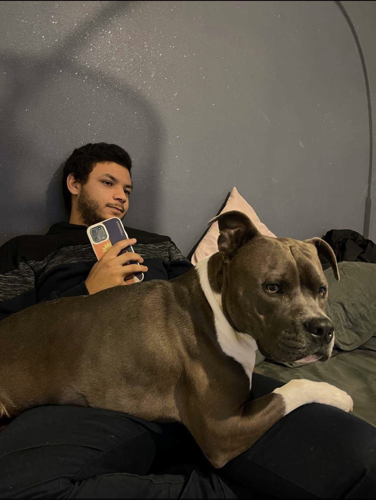

Sabri Abid

9 Square du Nord
95500-Gonesse
France
Né le 06/05/2000
sabri.abid95@gmail.com
06.20.64.04.93
Langues
- Français : Couramment.
- Anglais : Intermédiare.
- Espagnol : B2.
Centres d’intérêt
- Musique: Beatmaking
- Sport : Basket-Ball
- Cinéma: Action, Aventure
- Voyage : Japon
- Visiter
Expériences professionnelles
- 2018 :
- Equipier polyvalent - Roissy CDG - Prêt à Manger
- 2019 :
- Animateur dans un parc à trampolines à Roissy-en-France - JumpCity
- Juillet-Août 2019 :
- Responsable service animation et divertissment - JumpCity Roissy & Saint-Thibault-les-Vignes
- Septembre 2020 :
- Assistant d'éducation - Collège Evariste Galois Sarcelles.
- Septembre 2021:
- Alternance informatique - Technicien Support/Assistant ingénieur ZenConnect
Formations
- 2016 :
- Formation d'apprentissage baby-sitting.
- 2017 :
- Formation gestes de premiers secours (PSC1)
- 2017 :
- Formation en tant que serveur.
- 2016-2020:
- Etudiant en lycée générale et technologique - René Cassin Gonesse
- 2021 :
- BTS SIO
Diplôme
- 2015 :
- Diplôme du brevet des collèges
- 2017 :
- Diplôme PSC1
- 2020 :
- Obtention Permis B
- 2020 :
- Bac Sciences Technologies Laboratoires Spécialité Physiques-Chimies Laboratoires.